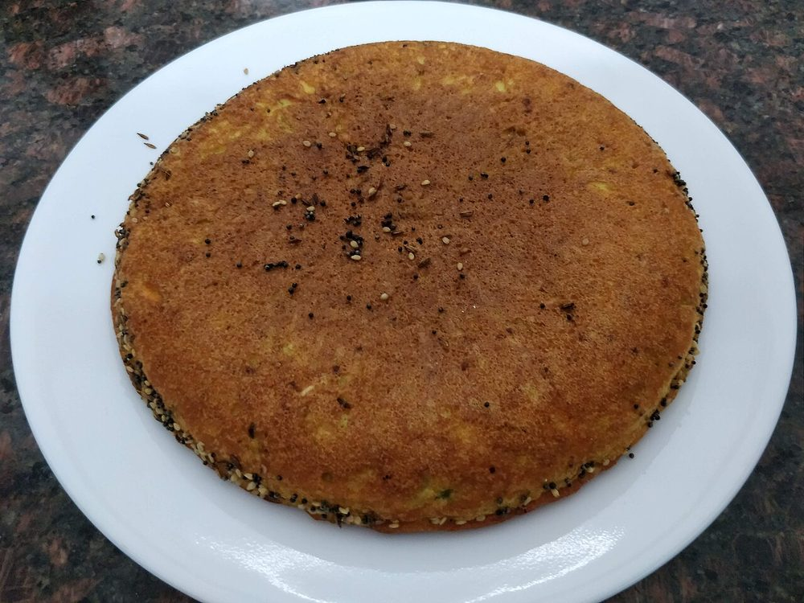

Start the day before. The fermenting alone is 8 hr, against 70 min of actual work.
Contains: milk, sesame, mustard
Ingredients
Quantities for 6.
- 200g Riceshort or medium grain
- 60g Chana Dal
- 60g Toor Dal
- 30g Urad Dal
- 1/2 tsp Fenugreek Seedsfeeds the ferment
- 200g, sour Yogurt
- 250g, peeled and coarsely grated Bottle Gourdsqueeze out and reserve the juice
- 1 tbsp, paste Ginger
- 3, minced Green Chilli
- 1/2 tsp Turmeric
- 1 tsp Chilli Powder
- 1 tbsp Sugar
- 1 tsp Enoadded at the last second, for liftoptional
- 5 tbsp Neutral Oil
- 1 tsp Mustard Seeds
- 1 tsp Cumin Seeds
- 2 tbsp Sesamemost of it goes on top
- 12 Curry Leaves
- 2, broken Dried Red Chillioptional
- 1/4 tsp Asafoetidause compounded-free hing to keep this gluten-free
- to taste Salt
- 3 tbsp, chopped Coriander Leavesoptional
Cookware
stovetop, kadhai, oven
Checked against the ingredient list for ten allergens: milk, egg, fish, crustaceans, tree nuts, peanuts, sesame, mustard, soy and gluten. Brands vary, so read the label on anything new to you.
Before you start
- Soak the rice, all three dals and the fenugreek together in plenty of water for 5 hours, then drain and grind coarse. Handvo wants grit, not a smooth idli batter.
- The ground batter needs 8-10 hours of fermentation, overnight in a warm spot. It should rise slightly and smell pleasantly sour.
- Grate the bottle gourd only when you are ready to mix, and fold it in just before cooking; it weeps and thins the batter if it sits.
Method
- Grind the soaked, drained rice and dals with the yogurt to a coarse batter, thick enough to drop off the spoon in a lump.Add the reserved bottle gourd juice rather than water if you need to loosen it.
- Cover and leave in a warm place 8-10 hours to ferment.
- Fold in the grated bottle gourd, ginger, chilli, turmeric, chilli powder, sugar, salt and coriander.
- Heat 3 tbsp oil in a heavy 22cm pan, crackle the mustard and cumin seeds, then add half the sesame, the curry leaves, dried chilli and asafoetida.
- Stir most of this tempering into the batter, leaving a spoonful and its oil in the pan.
- Beat in the eno, pour the batter into the pan, level it and scatter the remaining sesame over the top.Once the eno goes in the batter must hit the pan within a minute or the lift is lost.
- Cover and cook on the lowest heat 25 minutes, until the top is set and a skewer comes out clean.Low and slow. On high heat you get a burnt base over raw batter.
- Drizzle the remaining oil around the edge, flip the cake or slide it under a hot grill, and cook 10 minutes more until the crust is deep brown and crisp.
- Rest 10 minutes in the pan before cutting into squares.Cutting hot handvo tears it; the crumb needs to firm up.
Storage
Keeps 3 days refrigerated. Reheat slices in a dry pan or a 180C oven for 8 minutes to bring the crust back; the microwave makes it soggy.
Nutrition Good estimate
Medium protein: 10 g a serving, 11% of the calories
| Per serving165 g | Per 100 g | |
|---|---|---|
| Calories | 375 kcal | 227 kcal |
| Protein | 10.1 g | 6 g |
| Carbohydrate | 50.3 g | 30 g |
| of which sugars | 5.6 g | 3 g |
| Fibre | 4.7 g | 3 g |
| Fat | 15.4 g | 9 g |
| of which saturated | 2.3 g | 1 g |
| of which unsaturated | 12.2 g | 7 g |
Nearest database match used for asafoetida, curry leaves, urad dal. Estimated from raw ingredients using USDA FoodData Central.
More like this: Healthy Indian recipes · Vegetarian Indian recipes · Gluten-free Indian recipes · No onion no garlic recipes · Gujarati recipes
Times, yields, allergens and nutrition are guidance. Use your own judgement on doneness and on storing. More in About.